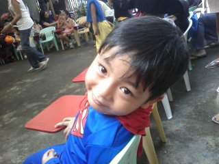
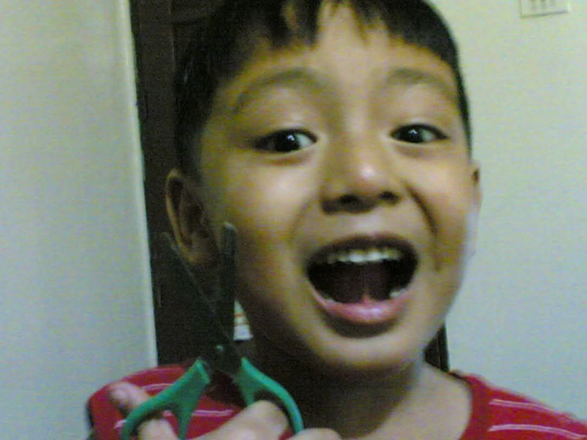
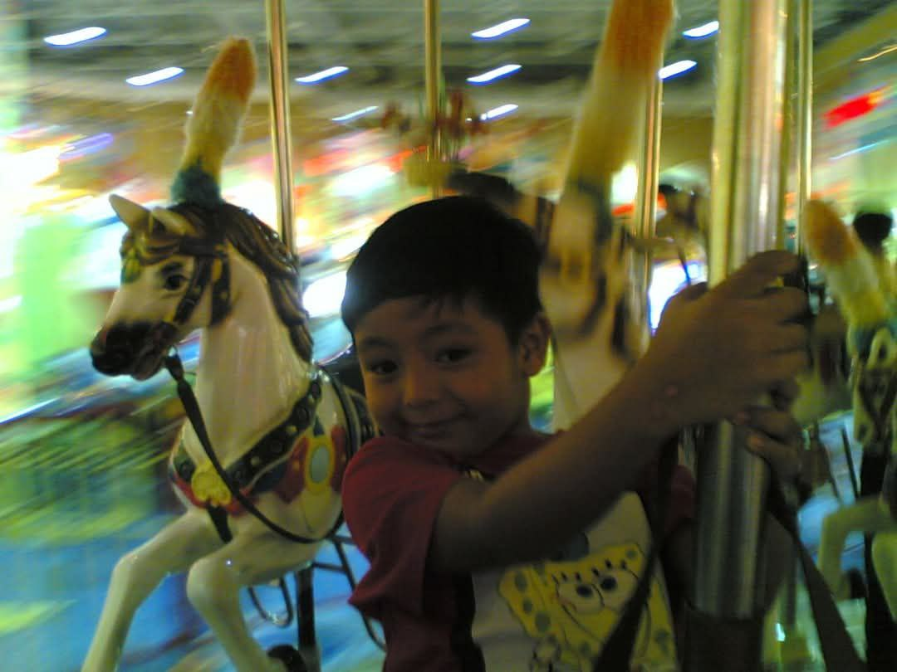
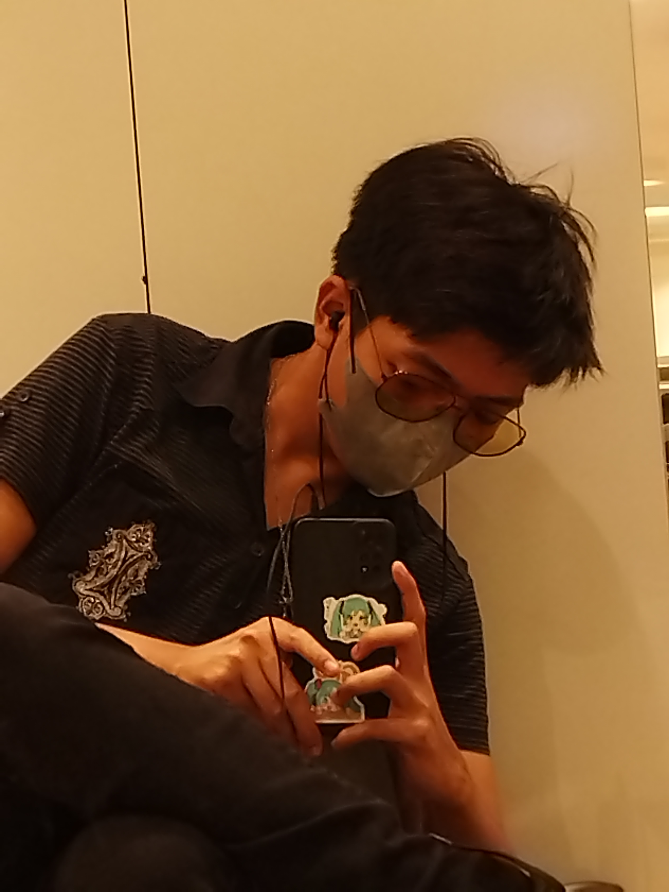
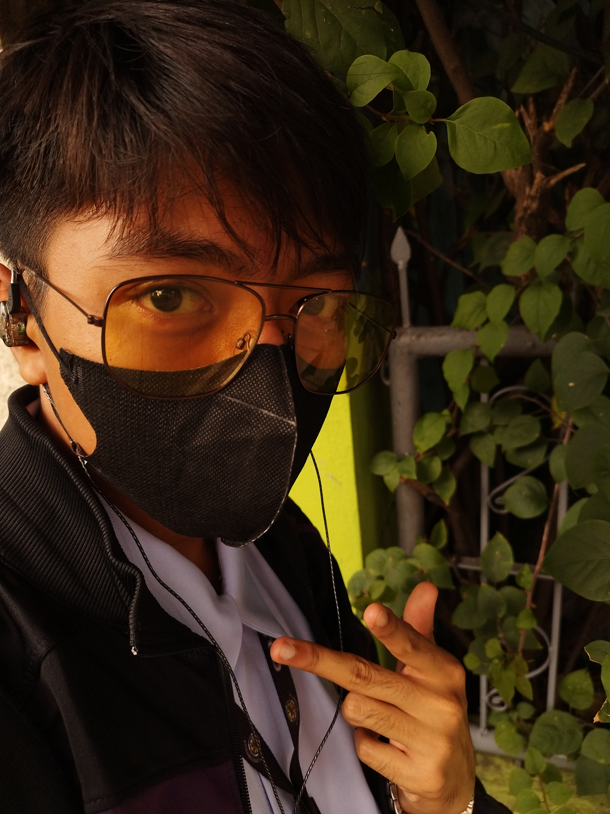
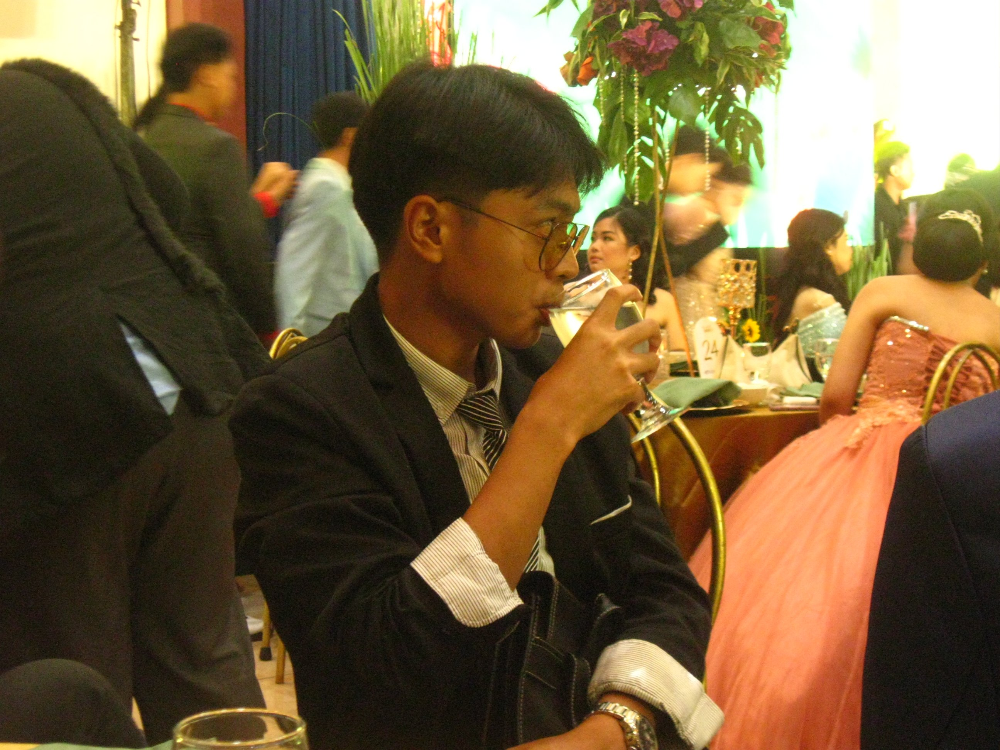
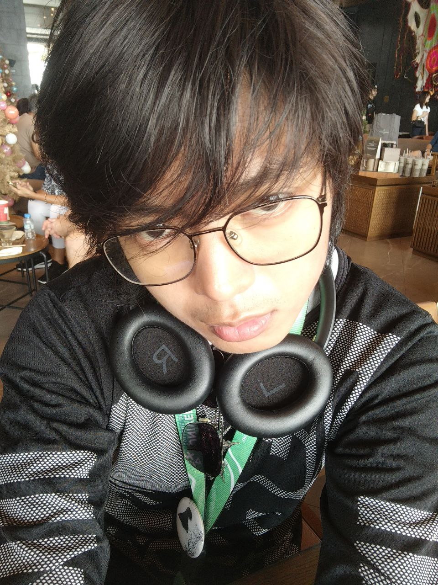
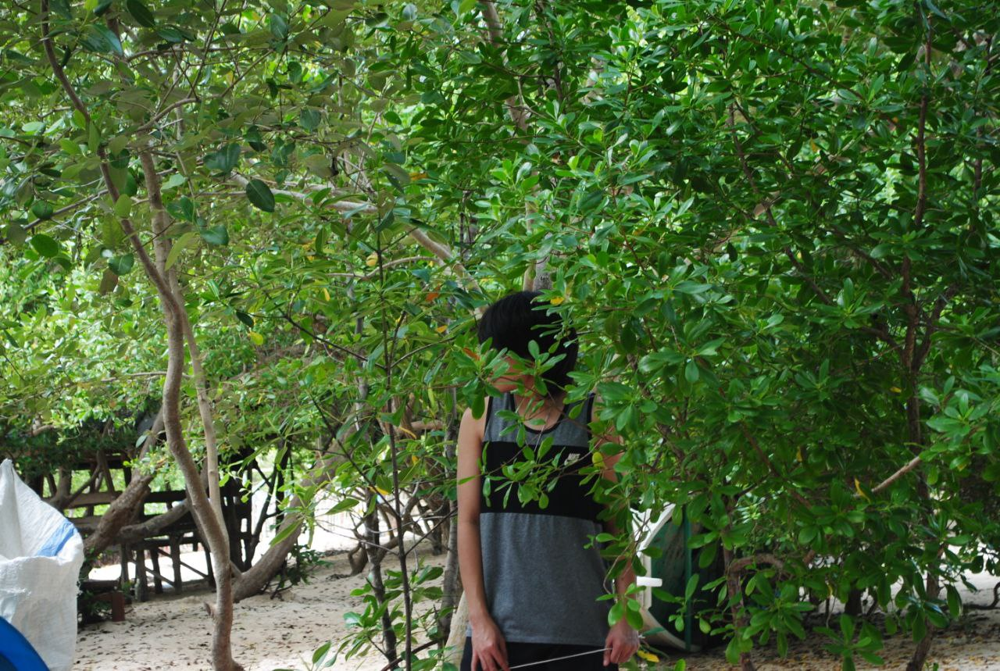

December 11, 2025 | Mark Andrew D.L. Mateo
My Childhood

November, 2010
My name is Mark Andrew Mateo. I was born on May 14, 2005, in Binangonan, Rizal. My family stayed there with my father’s relatives for a year. However, due to the disorganized environment, which was harmful for my well-being, we left the place and moved to Cainta, where my mother’s relative resides. As a child growing up in an open yet secluded suburban area, my family had resided in apartments throughout my childhood. I enrolled in St. Audrey kindergarten and San Juan Elementary school, a public school in Cainta. During those days, I gained friends from school and in my neighborhood, with whom I played games outside of academics. As my awareness of technology rose, so too did I become an introverted child who explored the internet and gaming as my form of recreational activities. In 3rd Grade, May 25, 2014. My sister was born named Mia Andrea, synonymous with my name. I grew up with her during the years of my childhood. At school, I was a top notcher and the class president, although I highly doubt reaching that place again due to my dissatisfaction with high achievements. I was known to be that artist in class who could draw and had practiced playing guitar, from which I discontinued until recently.

November, 2010
Those critical years that became the basis of my identity, what I sought throughout is the dream of connection and belongingness to which I have struggled. I lived those days with an observant mind, where I question and connect the dots on anything it relates to — that mindset is what I sought in relationships, but I let it dry as a dream. Others saw me as a silent yet kind little kid who ages quickly, but turned so eccentric and a ghostly figure. I relied on technology as my friends and relatives faded their connection, yet I enjoyed being alone. Watching, playing, washing dishes, drawing, eating, and sleeping — that was my childhood lifestyle. I never knew the importance of relationships and exploration until my adolescence.

November, 2010
My Teenage Years


May-December, 2023
After my family moved into permanent housing and I graduated from 6th grade, I then enrolled in Cainta Catholic College, a private non-secular school, as Catholicism is the central teaching point of the curriculum. I had a culture shock moving to this school, and this was the point in my life when I tried to pursue my interests and hobbies that have influenced my current self, including anime, arts, music by piano, and computer game modding. I was seen at the school as an eccentric transferee without knowledge about the school, and it was when I had a horrid time with my classmates due to their excessive teasing interactions until 8th Grade where I gained a circle of friends that I belonged to. We all had differences, but we came together due to our enjoyment of anime. I was a fairly average student by this age and did not look further into achieving things, but I did struggle on academics and getting along with other people outside my circle. When COVID-19 hit the pandemic toll, we were secluded from each other and outside, but we still connected via the internet. However, this period took a mental toll on me, as I’ve lost the footing of my life, confused on where I should be or who I should become — this convolution took a massive toll that I lost focus on academics and on myself for a year. I coped with it by letting myself explore more on the internet without degrading myself, and found myself on a rabbit-hole of music libraries and literature, hence I craved and dived. As I discovered and learned how the history of literature and music paved the way for artists to express themselves to the world through the critical process of communicating by art, that was how I became inspired, wanting to be a humanist and an artist. However, discovering myself in 10th Grade felt shorter than before, that I was rejected from wanting to be a journalist or an artist — seeing it as mere hobbies or a danger to my being, by that I enrolled in STEM in Senior High. That time had turned my perspective on life with a greater weight, as my philosophy is to attach myself with the world I was thrown into — a phenomenological and existential outlook without degrading into pessimism, where I gained insights about my existence. I became invested in alternative and emo culture in my senior high school years, and had pursued my first and second romantic relationships — it was not a good time to be had. Although my experience with my class section and friend circles was fun, which gave a light from 2 years of isolation. I still spent more time indoors, but experiencing independence and relationship pursuits by hangouts, I’ve become much more independent and confident to myself that I can travel wherever I want, either close or far from home. In 12th Grade, I started doing photography as a hobby — documenting little things in nature and essentially abstract things that meant to me (this was due to a film that I loved, and that was “It’s Such a Beautiful Day” by Don Hertzfeldt). I became more insightful with everything I feel and live in due to my obsession with literature — I became friends with a guy due to philosophical topics, discussing various metaphysical questions of “what is truth?” or “why do we exist?” by arriving into referential experiences and discussions, and a circle of friends that I tend to hangout with when drinking, and eating. At prom, I met a girl who became my third romantic interest, yet also broke up some months later. After graduation, we have split into different universities in different courses, and so our connections faded over time as our characters have changed as college went by.

May, 2024
My College Experience


January-October, 2025
What I can say about my life currently is how much early adulthood changed me without a space to breathe. I enrolled in University of the East Manila — this was my last option as I had a change of mind in choosing art or architecture as a career and I tried applying into a bunch of different universities: University of the Philippines-Diliman, Polytechnic University of the Philippines, University of Santo Tomas (which I passed fine arts in advertisement exams), Technological Institute of the Philippines-Manila, Technological University of the Philippines-Manila, Central Colleges of the Philippines, and lastly National University-Mall of Asia to which I’ve passed my Architecture Entrance Exams. However, due to the architect's hustle and the implications of long travel hours, I landed at the University of the East-Manila without any knowledge about its background, but hearing its specialties in Computer Studies, I eventually chose Computer Science as my major due to my interest in linguistics, designing, and curiosity in programming without having any experience. To be honest, I have a substandard skill at math, and I was nothing compared to my past half in Junior High, where I excelled in Math and English the most. Travelling to the campus was hard work as my parents did not allow me to move into a dorm, but I gradually did get a hold of it — I take a 40-minute jeep ride (that depends on its traffic) and another 40-minute LRT ride from Marikina-Pasig to Legarda — every long hour made me exhausted, but I appreciated the beauty of commuting. By the 1st year, it was another culture shock for me, as I hadn't been in Manila through most of my lifetime, and at a university campus. I was a silent new student on UE that doesn’t like to talk much, and new to programming. Nevertheless, I gradually gotten hold of myself as professors weren’t as harsh as I thought they would be, and improved my understanding on computers. Breaking my silence from the class as my seatmate befriended me, we formed a friend group of 10, but one of them shifted courses due to his lack of interest in computers and his successful cologne business. Due to our bonds as classmates and as a friend group, we’ve enticed ourselves in spending our time for hangouts, trips, and gaming when we have some free time — commonly during semester breaks. I’ve also gone through another romantic relationship, but it was unstable due to long-distance and toxic reciprocation, hence we broke up 4 months later. In this period, I began exploring experimental and post-modern arts by integrating them into my street photography hobby, and learning them to improve my digital graphic design, while improving my writing hobby by creating poetic-prose in my free time. I have also invested myself in post-structuralist philosophy and leftist politics due to the communities I’ve been discovering — becoming an advocate for human rights awareness. By the end of 1st year, the world turned my head upside down — at least, there were things I loved about it. Minor subjects like art appreciation, purposive communication, and understanding the self were integral in constructing my interests and my identity; whilst programming subjects were good and challenging, but calculus failed my comprehension all too badly (somehow I still passed). 2nd year started as I’ve healed up from my past relationship and academic burnout, I started pursuing design without coding, and the professors were similarly nice. However, the pressure was added on calculus or analysis, due to that being my weakest suit. Unfortunately, while I passed my other subjects, I have now failed analysis on finals and had to retake it these next semesters or so. Ultimately, my footing sets track on multiple opportunities that I’ve missed — they are yet to be discovered and pursued — because of my incapabilities of self-management. As footprints marked on the sand, kneeling, crying, and papers are starting to overflow, I think this will be the time I have to pursue myself for the world.

October, 2025